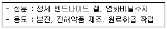
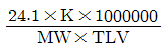
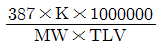
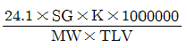
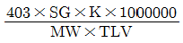
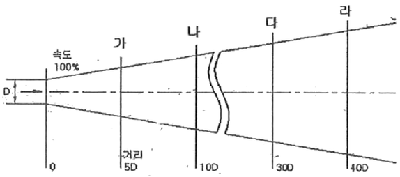

산업위생관리산업기사 (2017-03-05 기출문제)
1과목: 산업위생학 개론
1. 국소피로를 평가하는 데는 근전도(electromyogram, EMG)가 가장 많이 이용되고 있다. 피로한 근육에서 측정된 EMG를 정상 근육에서 측정된 EMG와 비교할 때 차이가 있는데, 이 차이에 대한 설명으로 맞는 것은?
- 총전압의 증가
- 평균 주파수의 증가
- 0~200Hz 저주파수에서의 힘의 증가
- 500 ~ 1000Hz 고주파수에서의 힘의 감소
(정답률: 72%)

2. 재해율의 종류 중 천인율에 관한 설명으로 틀린 것은?
- 천인율 = (재해자수/평균근로자수)*1000
- 근무시간이 다른 타 업종간의 비교가 용이하다.
- 각 사업장 간의 재해상황을 비교하는 자료로 활용된다.
- 1년 동안에 근로자 1000명에 대하여 발생한 재해자 수는 연천인율이라 한다.
(정답률: 81%)
3. 국제노동기구(ILO)는 산업보건사업의 권장조건으로써 3가지 기본목표를 제시하고 있다. 기본목표에 해당되지 않는 것은?
- 후진국 근로자의 작업조건을 선진국 수준으로 향상시키는데 기여
- 노동과 노동조건으로 일어날 수 있는 건강장해로부터 근로자 보호
- 근로자의 정신적ㆍ육체적 안녕 상태를 최대한으로 유지 증진시키는데 기여
- 작업에 있어서 근로자들의 정신적ㆍ육체적 적응, 특히 채용 시 적정배치에 기여
(정답률: 87%)
4. 산업안전보건법령상 보건에 관한 기술적인 사항에 관하여 사업주를 보좌하고 관리감독자에게 지도ㆍ조언을 할 수 있는 자는?
- 보건관리자
- 관리책임자
- 관리감독책임자
- 명예산업안전보건감독관
(정답률: 92%)
5. 직업병과 관련 직종의 연결이 틀린 것은?
- 잠함병 - 제련공
- 민폐증 - 방직공
- 백내장 - 초자공
- 소음성난청 - 조선공
(정답률: 84%)
6. 인간 - 기계 시스템 설계 시 고려사항으로 틀린 것은?
- 기스템 설계시 동작 경제의 원칙에 만족되도록 고려하여야 한다.
- 최종적으로 완성된 시스템에 대해 부적합여부의 결정을 수행하여야 한다.
- 대상 시스템이 배치될 환경조건이 인간의 한계치를 만족하는가의 여부를 조사한다.
- 인간과 기계가 다같이 복수인 경우, 배치에 따른 개별적 효과가 우선적으로 고려되어야 한다.
(정답률: 69%)
7. 미국국립산업안전보건연구원(NIOSH)의 중량 취급 작업에 권고치 중 감시기준(AL)DL 40kg일 때의 최대허용기준(MPL)은?
- 60kg
- 80kg
- 120kg
- 160kg
(정답률: 90%)
8. 유기용제의 생물학적 모니터링에서 유기용제의 소변 중 대사산물의 짝이 잘못 이루어진 것은?
- 톨루엔 : 마뇨산
- 스티렌 : 삼염화초산
- 크실렌 : 메틸마뇨산
- 노말헥산 : 2,5-헥사디온
(정답률: 62%)
9. 일반적으로 근로자가 휴식 중일 때, 산소소비량(oxygen uptake)으로 가장 적절한 것은?
- 0.01L/min
- 0.25L/min
- 1.5L/min
- 3.0L/min
(정답률: 90%)
10. MSDS 제도상에서 제조 수입, 양도, 제공 또는 사용을 금지하는 물질은?(관련 규정 개정전 문제로 여기서는 기존 정답인 2번을 누르면 정답 처리됩니다. 자세한 내용은 해설을 참고하세요.)
- 비소
- 청석면
- 백석면
- 6가크롬
(정답률: 75%)
11. 전신피로가 나타날 때 발생하는 생리학적 현상이 아닌 것은?
- 혈중 젖산 농도의 증가
- 혈중 포도당 농도의 저하
- 산소 소비량의 지속적 증가
- 근육 내 글리코겐 양의 감소
(정답률: 67%)
12. 소음의 노출기준에 대한 설명으로 틀린 것은?
- 1일 8시간 작업에 대한 소음의 노출기준은 90dB(A) 이다.
- 최대 음악수준이 150dB(A)을 넘는 충격소음에 노출되어서는 안된다.
- 충격속음을 제외한 작업장에서의 소음은 115dB(A)을 초과해서는 안 된다.
- 충격소음이란 최대음악수준이 120dB(A) 이상인 소음이 1초 이상의 간격으로 발생하는 것을 말한다.
(정답률: 65%)
13. 직업성 피부장해를 예방하기 위한 방법 중 틀린 것은?
- 개인 방호
- 원료, 재료의 검토
- 공정의 검토와 개선
- 본인의 희망에 의한 배치
(정답률: 91%)
14. 개인 차원의 스트레스 관리에 대한 내용으로 가장 거리가 먼 것은?
- 건강 검사
- 긴장 이완 훈련
- 직무의 순환
- 운동과 취미생활
(정답률: 75%)
15. 단순 질식제가 아닌 것은?
- 수소가스
- 헬륨가스
- 질소가스
- 암모니아 가스
(정답률: 68%)
16. 각 국가 및 기관에서 사용하는 노출기준의 용어가 틀린 것은?
- 미국 : PEL(Permissible Exposure Limits)
- 영국 : WEL(Workplace Exposure Limits)
- 독일 : MAK(Maximum Concentration Values)
- 스웨덴 : REL(Recommended Exposure)
(정답률: 70%)
17. 작업대사율이 7에 해당하는 작업을 하는 근로자의 실동률은? (단, 사이또와 오시마의 식을 활용한다.)
- 30%
- 40%
- 50%
- 60%
(정답률: 79%)
18. 근골격계의 질환의 특징을 설명한 것으로 틀린 것은?
- 생산 공정이 기계화, 자동화되어도 꾸준하게 증가하고 있다.
- 우리나라의 경우 산업재해는 50인 미만의 영세 중소기업에서 약 70% 정도를 차지한다.
- 우리나라에서는 건설업에서 근골격계 질환 발생이 가장 많고 그 다음으로 제조업 순이었다.
- 근골격계 질환을 최대한 줄이기 위하여 조기 발견, 작업환경 개선, 절절한 의학적 조치 등을 취하여야 한다.
(정답률: 78%)
19. 산업안전보건법상 용어의 정의가 틀린 것은?
- 산소결핍이란 공기 중의 산소농도가 18% 미만인 상태를 말한다.
- 산소결핍증이란 산소가 결핍된 공기를 들이마심으로써 생기는 증상을 말한다.
- 밀폐공간이란 산소결핍, 유해 가스로 인한 화재ㆍ폭발 등의 위험이 있는 장소로서 별도로 정한 장소를 말한다.
- 적정공기란 산소농도의 범위가 18% 이상 23.5% 미만, 탄산 가스의 농도가 1.0% 미만, 황화수소의 농도가 100ppm 미만인 수준의 공기를 말한다.
(정답률: 77%)
20. 육체적 작업능력이 16kcal/min인 근로자가 1일 8시간 동안 물체를 운반하고 있다. 이 때의 작업대사량이 7kcal/min라고 할 때 이사람이 쉬지 않고 계속하여 일할 수 있는 최대 허용시간은 약 얼마인가? (단, 16kcal/min에 대한 작업시간은 4분이다.)
- 145분
- 188분
- 227분
- 245분
(정답률: 45%)
2과목: 작업환경측정 및 평가
21. 가스상 물질의 포집을 위한 기체 혹은 액체치환병을 시료채취 전에 전동펌프 등을 이용한 채취대상공기로 치환 시 채취효율에 대한 오차율이 0.03%일 때 가스시료 채취병의 공기치환 횟수는?
- 18회
- 12회
- 8회
- 5회
(정답률: 40%)
22. 습구혹구온도지수(WBGT)를 사용하여 옥외작업장의 고온 허용기준을 산출하는 공직은? (단, 태양광선이 내리쬐지 않는 장소)
- (0.7×자연습구온도)+(0.2×흑구온도)+(0.1×건구온도)
- (0.7×자연습구온도)+(0.2×건구온도)+(0.1×흑구온도)
- (0.7×자연습구온도)+(0.3×흑구온도)
- (0.7×자연습구온도)+(0.3×건구온도)
(정답률: 80%)
23. 도장 작업장에서 작업시 발생되는 유기용제를 측정하여 정량, 정성분석을 하고자 한다. 이 때 가장 적합한 분석기기는?
- 적외선 분광광도계
- 흡광광도계
- 가스크로마토그래피
- 원자흡광광도계
(정답률: 54%)
24. 방사선 작업시 작업자의 실질적인 방사선 노출량을 평가하기 위해 사용되는 것은?
- 필름뱃지(Film badge)
- Lux meter
- 개인시료 포집장치
- 상대농도 측정계
(정답률: 78%)
25. 근로자가 순간적으로라도 유해물질에 초과되어서는 안되는 농도를 표시해주는 혀용기준의 종류는?
- TLV-TWA
- TLV-STEL
- TLV-C
- PEL
(정답률: 90%)
26. 기류측정기기라 할 수 없는 것은?
- 아스만통풍건습계
- Kata 온도계
- 풍차충속계
- 열선풍속계
(정답률: 69%)
27. 검지관에 관한 설명으로 틀린 것은?
- 특이도가 높다.
- 비교적 고동도에만 적용이 가능하다.
- 다른 방해물질의 영향을 받기 쉽다.
- 한 검지관으로 단일 물질만을 측정할 수 있어 각 오염물질에 맞는 검지관을 선정해야 한다.
(정답률: 79%)
28. 2차 표준기구에 해당하는 것은?
- 가스 미터
- Pitot 튜브
- 습식 테스트 미터
- 폐활량계
(정답률: 79%)
29. 아세톤 2000ppb은 몇 mg/m3인가? (단, 아세톤 분자량 = 58, 작업장 25℃, 1기압)
- 3.7
- 4.7
- 5.7
- 6.7
(정답률: 69%)
30. 입자채취를 위한 사이클론과 충돌기를 비교한 내용으로 옳지 않은 것은?
- 충돌기에 비하여 사이클론은 시료의 되튐으로 인한 손실염려가 없다.
- 사이클론의 경우 채취효율을 높이기 위한 매체의 코팅이 필요하다.
- 충돌기에 비하여 사이클론이 호흡성 먼지에 대한 자료를 쉽게 얻을 수 있다.
- 사이클론이 충돌기에 비하여 사용이 간편하고 경제적이다.
(정답률: 61%)
31. 유량, 측정시간, 회수율에 의한 오차가 각각 5%, 3%, 5% 일 때 누적오차(%)는?
- 6.2
- 7.7
- 8.9
- 11.4
(정답률: 83%)
32. 가스크로마토그래피에서 컬럼의 역할은?
- 전개가스의 예열
- 가스전개와 시료의 혼합
- 용매 탈착과 시료의 혼합
- 시료성분의 분배와 분리
(정답률: 61%)
33. 석면의 공기 중 농도를 표현하는 표준 단위로 사용하는 것은?
- ppm
- ㎛/m3
- 개/cm3
- mg/m3
(정답률: 91%)
34. 가장 많이 사용되는 표준형의 활성탄관의 경우, 앞층과 뒷층에 들어 있는 활성탄의 양은? (단, 앞층 : 공기 입구 쪽)
- 압층 : 50mg, 뒷층 : 100mg
- 압층 : 100mg, 뒷층 : 50mg
- 앞층 : 200mg, 뒷층 : 300mg
- 앞층 : 300mg, 뒷층 : 200mg
(정답률: 77%)
35. 이온크로마토그래피(IC)로 분석하기에 적합한 물질은?
- 무기수은
- 크롬산
- 사엽화탄소
- 에탄올
(정답률: 41%)
36. H2SO4(MW=98)4.9g dl 100L의 수용액 속에 용해되어을 때 이용액의 pH는? (단, 황산은 100% 전리한다.)
- 4
- 3
- 2
- 1
(정답률: 37%)
37. 1촉광의 광연으로부터 한 단위 입체각으로 나가는 광속의 단위는?
- Lumen
- Foot Candle
- Lambert
- Candle
(정답률: 84%)
38. 유사노출그룹(Similar Exposure Group : SEG)을 결정하는 목적과 가장 거리가 먼 것은?
- 시료 채취수를 경제적으로 결정하는데 있다.
- 시료 채취시간을 최대한 정확히 산출하는데 있다.
- 역학 조사를 수행할 때 사건이 발생된 근로자가 속한 유사노출그룹의 노출동도를 근거로 노출 원인을 추정할 수 있다.
- 모든 근로자의 노출 정도를 추정하고자 하는데 있다.
(정답률: 61%)
39. 총 먼지 채취 전 여과지의 질량은 15.51MG이고 2.0L/분으로 7시간 시료 채취 후 여과지의 질량은 19.95MG이었다. 이 때 공기 중 총 먼지농도(mg/m3)는? (단, 기타 조건은 고려하지 않음)(오류 신고가 접수된 문제입니다. 반드시 정답과 해설을 확인하시기 바랍니다.)
- 5.17
- 5.29
- 5.62
- 5.93
(정답률: 60%)
40. 어떤 분석방법의 검출한계가 0.15mg 일 때 경량한계로 가장 적합한 것은?
- 0.3mg
- 0.45mg
- 0.9mg
- 1.5mg
(정답률: 72%)
3과목: 작업환경관리
41. 전리 방사선은 생체에 대하여 파괴적으로 작용하므로 엄격한 허용기준이 제정되어 있다. 전리 방사선으로만 짝지어진 것은?
- α선, 중성자, x-선
- β선, 레이저, 자외선
- α선, 라디오파, x-선
- β선, 중성자, 극저주파
(정답률: 85%)
42. 공학적 작업환경관리 대책 중 격리에 해당하지 않는 것은?
- 저장탱크들 사이에 도랑 설치
- 소음발생, 작업장에 근로자용 부스 설치
- 유해한 작업을 별도로 모아 일정한 시간에 처리
- 페인트 분사공정을 함침 작업으로 실시
(정답률: 68%)
43. 방독마스크의 유해인자와 카트리지 색깔의 연결이 틀린 것은?
- 유기용제 - 흑색
- 암모니아 - 녹색
- 일산화탄소 - 청색
- 아황산가스 - 황적색
(정답률: 55%)
44. 출력이 0.01W인 기계에서 나오는 음향파워레벨(PWL,dB)은?
- 80
- 90
- 100
- 110
(정답률: 65%)
45. 고압환경에서 발생되는 2차적인 가압현상(화학적 장해)에 해당하지 않는 것은?
- 일산화탄소 중독
- 질소마취
- 이산화탄소 중독
- 산소 중독
(정답률: 68%)
46. 이상기압 환경에 관한 설명으로 적합하지 않은 것은?
- 지구표면에서의 공기의 압력은 평균 1KF/cm2이며 이를 1기압이라고 한다.
- 수면하에서의 압력은 수심이 10m깊어질 때마다 1기압씩 증가한다.
- 수심 20m에서의 절대압은 2기압이다.
- 잠함작업이나 해저터널 굴진 작업은 고압환경에 해당된다.
(정답률: 84%)
47. 알데히드(지방족)를 다루는 작업장에서 사용하는 장갑의 재질로 가장 적절한 것은?
- 네오프렌
- PVC
- 니트릴
- 부틸
(정답률: 63%)
48. 장기간 사용하지 않은 오래된 우물에 들어가서 작업하는 경우 작업자가 반드시 착용해야 할 개인보호구는?
- 입자용 방진마스크
- 유기가스용 방독마트크
- 일산화탄소용 방독마스크
- 송기형 호스마스크
(정답률: 84%)
49. 8시간 동안 어떤 근로자가 노출된 소음의 압력 수준이 10-2.8Watt이었다면, 노출수준(dB)은? (단, 기준음력 = 10-12Watt)
- 90
- 91
- 92
- 93
(정답률: 57%)
50. 밀페공간 작업시 작업의 부하인자에 대한 설명으로 잘못된 것은?
- 모든 옥외작업의 경우와 거의 같은 양상의 근력부하를 갖는다.
- 탱크바닥에 있는 슬러지 등으로부터 황화수소가 발생한다.
- 철의 녹 사이에 황화물이 혼합되어 있으면 황산화물이 공기중에서 산화되어 발열하면서 아황산 가스가 발생할 수 있다.
- 산소농도가 30% 이하(산업안전보건법 규정)가 되면 산소결핍증이 되기 쉽다.
(정답률: 88%)
51. 다음의 성분과 용도를 가진 보호 크림은?

- 피막형 크림
- 차광 크림
- 소수성 크림
- 친수성 크림
(정답률: 85%)
52. 자연조명에 관한 설명으로 틀린 것은?
- 천공광이란 태양고아선의 직사광을 말하며 1년을 통해 주광량의 50% 정도의 비율이다.
- 창의 면적은 바닥 면적의 15~20%가 이상적이다.
- 지상에서의 태양조도는 약 100000Lux 정도이다.
- 실내의 일정지침의 조도와 옥외의 조도와의 비율을 %로 표시한 것을 주광율이라고 한다.
(정답률: 54%)
53. 물질안전보건자료(MSDS)를 작성해야 하는 건강장해 물질이 아닌 것은?
- 금수성 물질
- 부식성 물질
- 과민성 물질
- 변이원성 물질
(정답률: 67%)
54. 렌트겐(R) 단위(1R)의 정의로 옳은 것은?
- 2.58×10-4/C/kg
- 4.58×10-4/C/kg
- 2.58×104/C/kg
- 4.58×104/C/kg
(정답률: 67%)
55. 청력보호구의 차음효과를 높이기 위한 내용으로 틀린 것은?
- 귀덮개 형식의 보호구는 머리카락이 길 때와 안경테가 굵거나 잘 부착되지 않을 때에는 사용하지 않는다.
- 청력보호구를 잘 고정시켜서 보호구 자체의 진동을 최소한으로 한다.
- 청격보호구는 다기공의 재료로 만들어 흡음효과를 최대한 높이도록 한다.
- 청력보호구는 머리의 모양이나 귓구멍에 잘 맞는 것을 사용한다.
(정답률: 71%)
56. 심 50m에서의 압력은 수면보다 얼마가 높겠는가?
- 약 1kg/cm2
- 약 5kg/cm2
- 약 10kg/cm2
- 약 50kg/cm2
(정답률: 66%)
57. 동일한 작업장 내에서 서로 비슷한 인체부위에 영향을 주는 유독성 물질을 여러 가지 사용하는 경우에 인체에 미치는 작용으로 옳은 것은?
- 독립작용
- 상가작용
- 대사작용
- 길항작용
(정답률: 76%)
58. 공기 중 입자상 물질은 여러 기전에 의해 여과지에 채취된다. 차단, 간섭 기전에 영향을 미치는 요소와 가장 거리가 먼 것은?
- 입자크기
- 입자밀도
- 여과지의 공경(막여과지)
- 여과지의 고형분(solidity)
(정답률: 64%)
59. 연료, 합성고무 등의 원료로 사용되며 저농도로 장기간 폭로 시 혈액장애, 간장장애를 일으키고 재생불량성 빈혈, 백혈병을 일으키는 유해화학 물질은?
- 노르말핵산
- 벤젠
- 사염화탄소
- 알킬수은
(정답률: 75%)
60. 한랭 환경에서 발생하는 제2도 동상의 증상은?
- 수포를 가진 광범위한 삼출성 염증이 일어난다.
- 따갑고 가려운 감각이 생긴다.
- 심부조직까지 동결하며 조직의 괴사로 괴저가 일어난다.
- 혈관이 확장하여 발적이 생긴다.
(정답률: 73%)
4과목: 산업환기
61. Della Valle가 유도한 공식으로 외부식 후드의 필요환기량을 산출할 때 가장 큰 영향을 주는 인자는?
- 후드 모양
- 후드의 재질
- 후드의 개구면적
- 후드로부터의 오염원 거리
(정답률: 75%)
62. 후드의 압력손실과 비례하는 것은?
- 정압
- 대기압
- 덕트의 직경
- 속도압
(정답률: 60%)
63. 전체환기에서 오염물질 사용량(L)DP 대한 필요환기량(m3/L)을 산출하는 공식은? (단, SG : 비중, K : 안전계수, MW : 분자량, 싶 : 노출기준이다.)




(정답률: 76%)
64. 관성력 집진기에 관한 설명으로 틀린 것은?
- 집진 효율을 높이기 위해서는 충돌 후 집진기 후단의 출구기류 속도를 가능한 한 높여야 한다.
- 집진 효율을 높이기 위해서는 압력 손실이 증가하더라도 기류의 방향전환 횟수를 늘린다.
- 관성력 집진기는 미세한 입자보다는 입경이 큰 입자를 제거하는 전처리용으로 많이 하용된다.
- 집진 효율을 높이기 위해서는 충돌 전 처리배기속도는 입자의 성상에 따라 적당히 빠르게 한다.
(정답률: 37%)
65. 작업장 공기를 전체환기로 하고자 할 때 조건으로 틀린 것은?
- 유해물질의 독성이 높은 경우
- 동일 작업장에 다수의 오염원이 분산되어 있는 경우
- 배출원에서 유해물질이 시간에 따라 균일하게 발생하는 경우
- 근로자의 근무 장소가 오염원에서 충분히 멀리 떨어져 있는 경우
(정답률: 79%)
66. 집경 40cm인 덕트 내부를 유량 120m3/min의 공기가 흐르고 있을 때, 덕트 내의 풍압은 약 몇 mmH2O인가? (단, 덕트 내의 공기는 21℃, 1기압으로 가정한다.)
- 11.5
- 15.5
- 23.5
- 26.5
(정답률: 40%)
67. 송품량을 가장 적게하여도 동일한 성능을 나타낼 수 있는 후드는?
- 플랜지가 붙고 공간에 있는 후드
- 플랜지가 없이 공간에 있는 후드
- 플랜지가 붙고 테이블 면에 고정된 후드
- 플랜지가 없이 테이블 면에 고정된 후드
(정답률: 73%)
68. 덕트 내 유속에 관한 설명으로 맞는 것은?
- 덕트 내 압력 손실은 유속에 반비례 한다.
- 같은 송풍량인 경우 덕트의 직경이 클수록 유속은 커진다.
- 같은 송풍량인 경우 덕트의 직경이 작을수록 유속은 작게 된다.
- 주물사와 같은 단단한 입자상 물질의 유속을 너무 크게 하면 덕트 수명이 단축된다.
(정답률: 59%)
69. 분진이 발생되는 공정에서 국소박이 시설의 계통도(배열순서)로 가장 일반적인 것은?
- 후드→공기정화장치→덕트→송풍기→배기구
- 후드→덕트→공기정화장치→송풍기→배기구
- 후드→송풍기→공기정화장치→덕트→배기구
- 후드→덕트→송풍기→공기정화장치→배기구
(정답률: 80%)
70. 대기의 이산화탄소 농도가 0.03%, 실내 이산화탄소의 농도가 0.3%일 때, 한사람의 시간당 이산화탄소 배출량이 21L라면, 1인 1시간당 필요환기량(m3/hrㆍ인)은 약 얼마인가?
- 5.4
- 7.8
- 9.2
- 11.4
(정답률: 41%)
71. 국소배기장치 중 덕트의 관리방안으로 적합하지 않은 것은?
- 분진 등의 퇴적이 없어야 한다.
- 마모 또는 부식이 없어야 한다.
- 닥트 내의 정압이 초기정압(ps)의 ±10% 이내이어야 한다.
- 덕트 마모 방지를 위해 분진은 곡관에서 속도는 낮게 유지해야 한다.
(정답률: 77%)
72. 페인트 공장에 설치된 국소박이 장치의 풍량이 적정한지 타코메타를 이용하여 측정하고자 하였다. 설계 당시의 사양을 보니 풍량(Q)은 40m3/min, 회전수는 1120 rpm, 이었으나 실제 측정하였더니 회전수가 1000rpm이었다. 이는 실제 풍량은 약 얼마인가?
- 20.4m3/min
- 22.6m3/min
- 26.3m3/min
- 35.7m3/min
(정답률: 35%)
73. 그림과 같이 노즐(Nozzle) 분사구 개구면의 유속을 100%라 하고 분사구 내경을 D라고 할 때 분서구 개구면의 유속이 50%로 감소되는 지점의 거리는?(오류 신고가 접수된 문제입니다. 반드시 정답과 해설을 확인하시기 바랍니다.)

- 5D
- 10D
- 30D
- 40D
(정답률: 64%)
74. 자유공간에 떠있는 직경 20cm인 원형개구후드의 개구면으로부터 20cm 떨어진 곳의 입자를 흡인하려고 한다. 제어풍속을 0.8m/s으로 할 때 속도압(mmH2O)은 약 얼마인가? (단, 기체 조건의 21℃, 1기압 상태이다.)
- 7.4
- 10.2
- 12.5
- 15.6
(정답률: 27%)
75. 후드의 성능 불량 원인이 아닌 경우는?
- 제어속도가 너무 큰 경우
- 송풍기의 용량이 부족한 경우
- 후드 주변에 심한 난기류가 형성된 경우
- 송풍관 내부에 분진이 과다하게 최적되어 있는 경우
(정답률: 66%)
76. 0℃, 760mmHg인 작업장에서 메탄올(CH3OH이 260MG/m3)있다면, 이는 몇 ppm인가?
- 2.9ppm
- 11.6ppm
- 182ppm
- 260ppm
(정답률: 48%)
77. 중력집진장치에서 집진효율을 향상시키는 방법으로 틀린 것은?
- 침강높이를 크게 한다.
- 수평 도달거리를 길게 한다.
- 처리가스 배기속도를 작게 한다.
- 침강식 내의 배기 기류를 균일 하게 한다.
(정답률: 52%)
78. 고농도 오염물질을 취급할 경우 오염물질이 주변 지역으로 확산되는 것을 방지하기 위해서 실내압은 어떤 상태로 유지하는 것이 적정한가?
- 정압유지
- 음악(-)유지
- 동압유지
- 양압(+)유지
(정답률: 69%)
79. 정압과 속도압에 관한 설명으로 틀린 것은?
- 속도압은 언제나 (-)값이다.
- 정압과 속도압의 합이 전압이다.
- 정압＜대기압이면 (-)압력이다.
- 정압＞대기압이면 (+)압력이다.
(정답률: 77%)
80. 송풍기의 정압 효율이 좋은 것부터 맞게 나열한 것은?
- 방사형 ＞ 다익형 ＞ 터보형
- 터보형 ＞ 다익형 ＞ 방사형
- 터보형 ＞ 방사형 ＞ 다익형
- 방사형 ＞ 터보형 ＞ 다익형
(정답률: 65%)